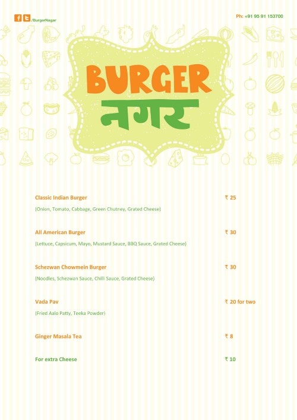

Burger Nagar: A Street-Food Stunt
How opening a food-stall made us deeply venerate entrepreneurs?

Ideation
We were going for a road-trip to Yelagiri, Tamil Nadu. Yelagiri is a little hilltown 200 kms away from Bangalore. It makes for one of the most preferred quick getaways from the city. Not eaten since we woke up, we stopped on our way at the roadside eatery to have freshly made Idlis and Dosas (South Indian breakfast specialties). They were served along with two chutneys, one sweet and sour and the other one thick but neutral in taste. It was one of the best breakfasts we had in ages and we literally paid pennies for it. Through the trip, we discussed how the best food in India is either served by the side of the road or in 5-stars. It seemed to us that it shouldn’t be very difficult (we were proved miserably wrong later) to run a food-stall. We, three, decided to give it a try in hopes of making big out of something small.

Business Plan
In India, roadside eateries are very common. All the cities, be it big or small have spaces occupied by a group of eateries which run on small steel structures called Stalls. These are usually in public areas, parks or lakes or shopping center and they usually have huge footfalls. These stalls carry their ingredients and they cook then and there. They are immobile and cheap versions of food trucks. From far, they smell of good business idea.
We got interested in this model because of having both low Capex and low Opex and huge footfall. We expected each unit to be doing small profits. Scaling up the business would simply mean copy-pasting the same stall design, menu, and process across the city. We wanted to start with doing an MVP (Minimum Viable Product) in the locality we lived.
User Research
In the locality that we lived, there are few IT offices, a college, few government buildings, and a shopping center. This means this area attracts a lot of population, specifically the working population. Near to the college, there were about 15–20 food stalls selling local Indian food like Dosa, Chowmein, Pao Bhaji, Pulav, Ice-cream, and a lot of mouthwatering items. We visited each of the food-stall, closely observed the dexterity with which the cook was making the food, anticipating people nearby waiting for their plate of heaven and the people who were eating and didn’t know anything else for few minutes. In simple words, it was a happy place!
The food served by these food-stalls was delicious, fast, and cheap. The main demographic was unmarried adults, from the nearby college and the IT sector. And they came here after their work or college in the evening. They were hungry and stressed from the day and were there for some unwinding. We realized that no-one comes there for healthy food, taste and speed is all that matters. The food-stalls worked from 5 pm to 9 pm. People spent ~Rs.100 on an average and relished not at one but two food-stalls.
We had a weak spot for burgers and there wasn’t any stall selling burgers in that area. In fact, there was nobody selling burgers on a food-stall anywhere in Bangalore (there were food-trucks, yes). We were clear we weren’t competing with McDonald's or Burger King. We knew for sure that we would be able to make tastier burgers than them. ;)
Menu Creation
At first, we wanted to make a lot of types of Burgers. We started experimenting with ingredients like Mayonaise, Barbeque Sauce, Mustard, Tomato Ketchup, Onions, Tomatoes, Potato Patty, Lettuce, eggs, and a lot of veggies and sauces. We explored the best restaurants in Bangalore who were making burgers. And man! We ate so many burgers.
We had a friend who was running a successful restaurant in Bangalore by the name Oliver’s in Whitefield. He made us realize that we shouldn’t keep a lot of options because speed is the most critical in this business. We reduced our menu from decided 10 options to just 3 (Later we realized that even 3 was too much to handle). The 3 options were pretty similar in the core preparation. They differed by the veggies and sauces in them, much inspired from the Subway model here.
We selected 3 burgers, one American, one Indian, and one Chinese. They weren’t really the perfect embodiment of the cultures, after all, they had very few differentiation. But what we wanted was to give a clear simple theme to the Burger Nagar that can wrap around the customer and the cook’s tongue. Ingredients used: Burger Buns, Aalo Patty, Cheese, Mayonnaise, Tomato Sauce, Chilli Sauce, Szechwan sauce, mustard sauce, BBQ sauce, Oil, butter, Capsicum, Onion, Tomatoes, Lettuce, and Cabbage.
The core making of each one of it was almost the same. The process started with heating the buns with butter and heating the Potato Patty (We procured the Patty from a vendor, making it is another hell of a job). After this was done, the specific veggies and sauces were added to give the Burger the culture touch.
We also included Vada Pav and Chai in the menu. Chai or Masala Tea is pretty simple to make. And one of the burners was used to make the same. We anticipated people would prefer Chai along with their burger.
Food-Kiosk Manufacturing
One of the most tedious battles was getting the Kiosk manufactured. Magadi Road in Bangalore is the hardware manufacturing hub in Bangalore. After observing many food-stalls in our research period, we were pretty clear on what we wanted. We spent 2 weeks talking to manufacturers, eventually, someone agreed to make our kiosk to the budget we could afford and the delivery time we expected.
Specific use-cases for the Kiosk:
A. Compartments tall enough to keep gas cylinder and stools in and lock them.
B. Pole-Structure to support shade to provide cover to the cooking space.
C. Wheels and locks for easy dragging and locking of the same.
D. A 3-inch wide platform for handing over the prepared food to the customer. This platform should be on an arms-distance from the cook, 2-feet above the stove.
E. A 3-inch wide platform 3-feet above the ground on the outer side of the stall. This serves as a table in road-side fast food eating where a user can eat while standing. One expects there to be a lot of people and a food-stall doesn’t have any sitting space beside a couple of stools.
Finding and Training the Cook
Finding the cook wasn’t very difficult. Much difficult was to retain it. In India, a lot of people from other states migrate to big cities to earn a living. Finding a cheap labor is never difficult in India. We went from small eateries to restaurants all around the neighbourhood. After finding a lead who would be ready to do such a thing, the price negotiations happened. Post the price setting, we took our guy to our friend at Oliver’s restaurant. The first guy that we took to Oliver’s was able to make the burgers, the way we wanted, with speed. We gave him the job soon after eating the first burger.
Getting Ready
We spent the next 2 weeks — printing the flex board, menu cards, and the hangers for our food-stall, trying and modifying the recipe multiple times, buying supplies for our launch, making an Accounting sheet. There were innumerable tasks and we were running haywire in every direction.
The D-Day
We were ready for our launch. We had the space where we are going to set up our food-stall. It was opposite to the college along with other food-stalls. Soon after setting up shop there, security guards from the shop nearby came asking for money to park our food-stall. The parking fee was too exorbitant, we shifted from there to a near-by place.
Soon it hit 5 pm and people started coming in to explore the offering by the new kid in town. People were curious to see 3 unusual folks running the stree food business. People had many questions, they asked where we worked, they asked why are we doing this. Some people asked why don’t we serve meat, there was a temple nearby and we didn’t want to get into trouble with that for sure. We placed stools in front of the stall and by 7 PM we were getting orders with the speed that we couldn’t furnish. It was the greatest moment in whole journey for us then. The 1st day closed with the sale of 29 burgers and 11 Tea. The money was pennies and we surely burned more that we earned but it was hell of a start.
Failure and Closing Down
After 2 months of sweating, thousands of rupees burnt in operational costs, and innumerable hours spent running after the cook or for supplies, we decided to shut down our food-stall, but with a very heavy heart.
There were primarily 16 ingredients to make 3 burgers. We were always running into operational issues. Either the items were not being delivered on time, or they were getting spoiled too soon, or finished too soon.
It was a tough job catching up with the cook, the cook wasn’t coming on time. We were always chasing him. While working, he was never able to manage cooking, talking to people, and collecting money. We also suspected that he was stealing from us, the whole situation was a chaos. We decided to get one more help, but before we got to that we decided to pull the plug.
Most frustrating was managing all these with our super demanding full-time jobs. Putting more effort did result in things going smoothly but we are not able to automate it. We had practically quit everything else, be it sports, going-out, partying, studying. Our life has become the food-stall and it was taking a toll.
After burning our hands, we realised that we have to always present with the food-stall. None of us was ready to sacrifice their job, this wasn’t that big yet. We had a great learning experience running Burger Nagar, till another time we decided to shut it down.
PS: It was back in Summers of 2014 that I started Burger Nagar with two of my friends from work. We were working as Business Analyst, we were tired with our IT jobs and were ambitious to start something of our own. The endeavour failed but our friendships got strengthened. We are still great friends and will always be.